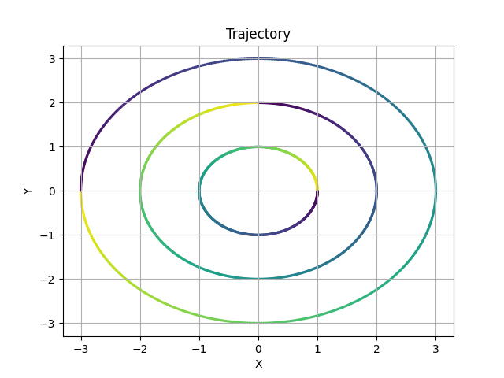
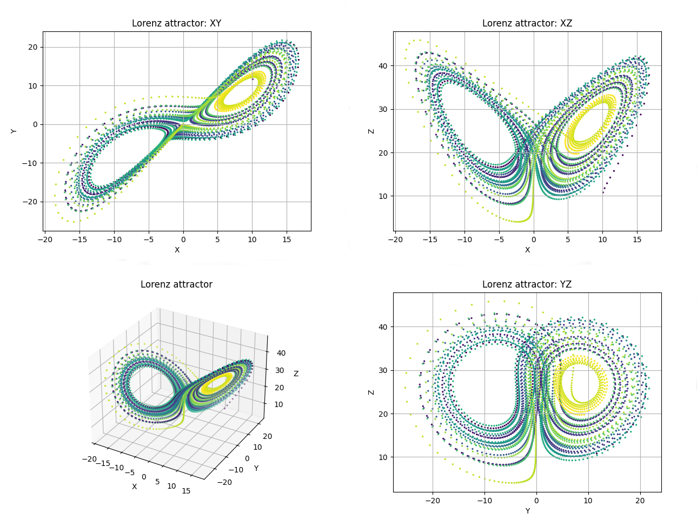
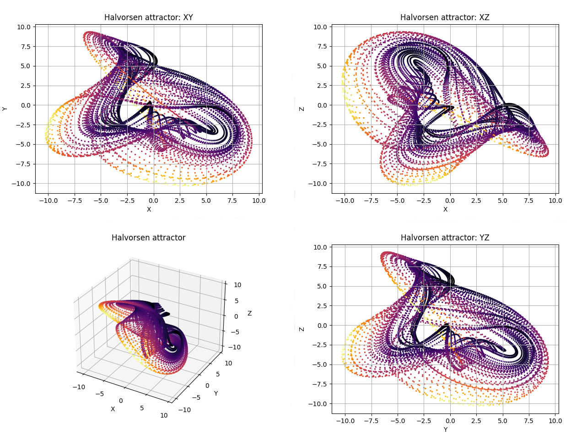

First steps
In this examples, we will be using Trajectory2D and Trajectory3D classes. So, we'll have to import them from phaseportrait module:
from phaseportrait import Trajectory2D, Trajectory3D
Both classes take 1 necessary argument:
- dF function : a function that, in this case, returns a tuple, corresponding of the evolution of the 2/3 coordinates.
Trajectory2D
Let's start with an easy example: just a circle.
In order to compute the trajectory you need the amount of points n_points, the function dF, and initial position initial_position(x,y). In a circle it should look something like this:
def dF(x,y):
return -y, x
circle = Trajectory2D(dF, n_points=628, size=2)
circle.initial_position(1,0)
circle.plot()

Multiple trajectories
Just add more initial positions:
circles = Trajectory2D(dF, n_points=628, size=2)
circles.initial_position(1,0)
circles.initial_position(0,2)
circles.initial_position(-3,0)
circles.plot()

If you want to diferenciate between multiple trajectories use karg lines=True, as in the following:
def Lorenz(x,y,z,*, s=10, r=28, b=8/3):
return -s*x+s*y, -x*z+r*x-y, x*y-b*z
chaos = Trajectory3D(Lorenz, lines=True, n_points=1300, mark_start_position=True, size=3, Title='Nearby IC on Lorenz attractor')
chaos.initial_position(10,10,10)
chaos.initial_position(10,10,10.0001)
chaos.plot()

Ranges, title, labels and colormaps
Ranges can be defined in several ways.
-
A single number. In this case the range is defined from zero to the given number in all axes.
-
A range, such
[lowerLimit , upperLimit]. All axes will take the same limits. -
Three ranges, such that
[[xAxisLowerLimit , xAxisUpperLimit], [yAxisLowerLimit , yAxisUpperLimit], [zAxisLowerLimit , zAxisUpperLimit]]
Title and labels with the kargs: Title, xlabel, ylabel and zlabel.
For example:
def dF(x,y, *, w=2):
return -y, w*x
example = Trajectory2D(dF, n_points=628, Range=[[-1,1],[-3,3]], size=2, Title='This is an ellipse', xlabel='This the X label', ylabel='This is the Y label')
example.initial_position(1,0)
example.plot()

Colormap expresses the velocity of the trajectory, it can be changed with color kwarg. Default colormap is 'viridis', in which purple-shifted colors indicate less velocity than yellow-shifted colors. A list with accepted values can be found here.
An also valid value is t, which will represent the colors as the evolution in time of the trajectory, according to viridis cmap. Using karg color when calling plot method permits changing the colormap to another.
Numba
Numba can be used to compute trajectories. To use it, give numba=True as kwarg. When using Numba, dF_args karg is compulsory. For instance:
def Lorenz(x,y,z,*, s=10, r=28, b=8/3):
return -s*x+s*y, -x*z+r*x-y, x*y-b*z
Lorentz_plot = Trajectory3D(Lorenz, dF_args={'s':10, 'r':28, 'b':8/3}, color='t', n_points=4000, numba=True, size=2, Title='Lorenz attractor')
Lorentz_plot.initial_position(10,10,10)
Lorentz_plot.plot()

Thermalization
If you want to see an attractor you should discard the initial points. In order to do that use karg thermalization=N where N is the number of points calculated and rejected. Just like this:
def Halvorsen(x,y,z, *, s=1.4):
delta = (3*s+15)
return -s*x + 2*y - 4*z - y**2 + delta , -s*y + 2*z - 4*x - z**2 + delta, -s*z + 2*x - 4*y - x**2 + delta
attractor1 = Trajectory3D(Halvorsen, dF_args={'s':1.4}, n_points=10000, thermalization=500, numba=True, size=2, Title='Halvorsen attractor')
attractor1.initial_position(0,5,10)
attractor1.plot(color='inferno')
Or you can use the method thermalize, then the initial position taken will be random.
def Halvorsen(x,y,z, *, s=1.4):
delta = (3*s+15)
return -s*x + 2*y - 4*z - y**2 + delta , -s*y + 2*z - 4*x - z**2 + delta, -s*z + 2*x - 4*y - x**2 + delta
attractor1 = Trajectory3D(Halvorsen, dF_args={'s':1.4}, n_points=10000, numba=True, size=2, Title='Halvorsen attractor')
attractor1.thermalize(thermalization_steps=1000)
attractor1.plot(color='inferno')

Sliders
This method allows the user to modify the dF_args in the plot, so it is easier to visualize interesting behaviours.
To use them the user must declare the specific name of the karg. Initial value, range of values and step between selectionable consecutive values are optional.
def Aizawa(x,y,z,*, a=0.95, b=0.7, c=0.6, d=3.5, e=0.25, f=0.1):
return (z-b)*x - d*y, d*x + (z-b)*y, c + a*z - z*z*z/3 - (x*x + y*y) * (1 + e*z) + f*z*x*x*x
attractor2 = Trajectory3D(Aizawa, n_points=10000, size=1, thermalization=2000, Title='Aizawa attractor')
attractor2.thermalize()
attractor2.add_slider('a', valinit=0.95, valinterval=[0,1], valstep=0.005)
attractor2.add_slider('b', valinit=0.7, valinterval=[0,1], valstep=0.005)
attractor2.add_slider('c', valinit=0.6, valinterval=[0,1], valstep=0.005)
attractor2.add_slider('d', valinit=3.5, valinterval=[0,4], valstep=0.05)
attractor2.add_slider('e', valinit=0.24, valinterval=[0,1], valstep=0.005)
attractor2.add_slider('f', valinit=0.1, valinterval=[0,1], valstep=0.005)
attractor2.plot()

We've taken a look to the most important arguments in order to visualize trajectories. Nevertheless, trajectory classes have more features that can be seen by taking a look into the docs:
Some more examples
If you want to take a look to some more 'elaborated' plots, we recommend you taking a look to the following file, in which you cand find several famous chaotic attractors.